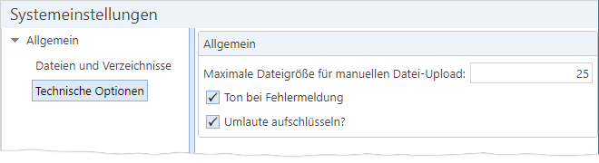

Symbol |
Schaltfläche |
Beschreibung |
|---|---|---|
|
„Suchen“ [Strg] + [F] |
Ruft eine Liste aller Systemeinstellungen auf, in der Systemeinstellungen nach verschiedenen Kriterien gesucht werden können. |
TEXT SCRAMBLING in TRIAL VERSION OUTPUT! In evaluation mode, Help+Manual will scramble individual characters in random words in your published output files. This is a limitation of the free trial version. This help system was created with an evaluation copy of Help+Manual.
Im TRMS unter [Administration -> Systemeinstellungen] finden Sie die Verwaltung der TRMS-Systemeinstellungen:

Abb. 42: Systemeinstellungen des TRMS
Schaltflächen
Symbol |
Schaltfläche |
Beschreibung |
|---|---|---|
|
„Suchen“ [Strg] + [F] |
Ruft eine Liste aller Systemeinstellungen auf, in der Systemeinstellungen nach verschiedenen Kriterien gesucht werden können. |
Systemeinstellungen des TRMS
Optionsunterpunkt „Dateien und Verzeichnisse“
Systemeinstellung [interner Name] |
Beschreibung |
|---|---|
Temp-Verzeichnis für Datei-Upload (auf Web-Server) [DocumentTempUploadedPath] |
Absoluter Pfad auf dem TRMS-Web-Server oder UNC-Pfad, in den Dateien vom Client temporär hochgeladen werden, bevor sie der Web-Server an den Anwendungs-Server weiterreicht (z. B. beim Hochladen einer trms4-Paketdatei unter „Pakete“). (Textfeld, Standard-Wert: „c:\tmp“) |
Optionsunterpunkt „Technische Optionen“
Systemeinstellung [interner Name] |
Beschreibung |
|---|---|
Maximale Dateigröße für manuellen Datei-Upload [MaxUploadSize] |
Legt fest, wie viele Megabytes eine Datei maximal groß sein darf, damit ein Nutzer sie manuell mit dem Datei-Upload-Dialog in der Web-Oberfläche hochladen kann (z. B. trms4-Paketdateien im Menüpunkt „Pakete“). Überschreitet die Datei diese Größe, wird eine entsprechende Fehlermeldung angezeigt. Der effektive Wert wird intern in Bytes berechnet: <Wert der Systemeinstellung> * 1024 * 1024 (bei 25 MB also effektiv 26214400 Bytes) (Zahlenfeld, Standard-Wert: 25) Administrative Hinweise •Diese Systemeinstellung wird nur bei der manuellen Bedienung des TRMS ausgewertet. Bei automatisierten Prozessen ist stattdessen die Einstellung „maxAllowedContentLength“ in den „Web.config“-Dateien des Anwendungs- und Web-Servers des TRMS maßgeblich (ist diese nicht vorhanden, gilt als Standard eine Größe von ca. 25 MB). •Der effektiv größte erlaubte Wert für die Systemeinstellung entspricht dem config-Wert. Ein höherer Wert in der Systemeinstellung ist wirkungslos, da die Größe auf den config-Wert gedeckelt wird. Wenn Sie den Wert in der Systemeinstellung erhöhen möchten, muss der config-Wert daher mindestens ebenso hoch sein. Der Datei-Upload-Dialog enthält einen Hinweistext mit der aktuellen Größenbeschränkung. Nach einer Änderung der Systemeinstellung kann es aufgrund von Caching sein, dass noch einige Zeit der vorherige Wert dort angezeigt wird, auch wenn der neue Wert bereits aktiv ist. |
Ton bei Fehlermeldungen [SoundErrorMessage] |
Legt fest, ob beim Auftreten von Fehlern bei der manuellen Nutzung der TRMS-Weboberfläche der Windows-Fehlerton abgespielt werden soll. (Kontrollkästchen, Standard-Wert: Nein (Häkchen nicht gesetzt)) |
Umlautbehandlung in Filterausdrücken [leer].[ForceUmlautsNormalisation] |
Legt fest, wie das TRMS Umlaute im Suchausdruck behandeln soll, wenn per Filter „unscharf“ gesucht wird (also mit Joker-Zeichen oder einem der Suchausdrücke „Enthält“, „Beginnt mit“, oder „Endet mit“). Möglich sind folgende Werte: •„Keine“: Es erfolgt keine Sonderbehandlung von Umlauten. Eine Suche nach „Mül*“ findet somit nur z. B. „Müller“, aber nicht „Mueller“ oder „Muller“. (interner Wert „NoSubstitution“) •„Suche um Basisbuchstabe erweitern“: Der Suchausdruck wird intern so erweitert, dass bei einem Umlaut zusätzlich auch der zugehörige Basisbuchstabe (z. B. „u“ für „ü“) gefunden würde. Eine Suche nach „Mül*“ findet damit z. B. „Müller“ und „Muller“, aber nicht „Mueller“. (interner Wert: „OnlyBaseSubstitutionWithoutWildcard“) •„Suche um Basisbuchstabe und Folgezeichen erweitern“: Der Suchausdruck wird intern so erweitert, dass bei einem Umlaut zusätzlich auch der zugehörige Basisbuchstabe zuzüglich beliebiger, darauf folgender Zeichen gesucht wird. Der Ausdruck „MÜL*“ würde sinngemäß zu folgender Suche führen: „'M', gefolgt von 'Ü' oder 'U', gefolgt von beliebigen Zeichen bis zum 'L', gefolgt von beliebigen Zeichen“. Dies bedeutet, dass eine Suche nach „Mül*“ nicht nur somit z. B. „Müller“, „Muller“ und „Mueller“ findet, sondern auch „Murler“ oder auch „Müzzeler“. Dies liegt an technischen Einschränkungen in SQL, deren Umgehung zu Performance-Einbußen führen würde. Deshalb wird die Möglichkeit falsch-positiver Treffer wie „Müzzeler“ bei einer Suche nach „Mül*“ in Kauf genommen. (interner Wert: „FullSubstitutionWithWildcard“) Hinweise •Die Groß-/Kleinschreibung hat grundsätzlich keinen Einfluss auf die Suchergebnisse. •Es werden nur folgende Umlaute/Sonderzeichen beachtet: ä, ö, ü und ß. Das bedeutet, dass beispielsweise Buchstabenvarianten mit Akzenten (z. B. é, è, ê) keine Sonderbehandlung erhalten. (Listenfeld, Standard-Wert: „Suche um Basisbuchstabe erweitern“) |